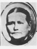
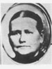

Buchanan Families
Home
Histories
Charts
Photos
Maps
Restricted
News
Info
Contact
| <--(return)-- | John Buchanan and Nancy Ann Bach(e) | ----> |
 1 1 2 2 3 3 4 4 |
Click on the picture to enlarge, double-click to reduce
The group picture is of 18 of the children of Archibald Waller Overton Buchanan a few years before his death.
(Not shown, but living at the time: Osmund Buchanan, James Carlos Buchanan and adopted son, Jacob Joseph Smith)
Back Row, left to right: Amy Lorett B. Ence, Henry Pomroy B., Eugene Deloss B., William Wallace B., Eunice Rosina B. Powell, Castina Maria B. Young, Ethelyn B. Brienholt, Nancy Edna B. Beecroft.
Middle Row, left to right: Helen Amelia B. Payne, Theda Jane B. Oldroyd, Sarah Elizabeth (Sade) B. Lemmon, Archibald W. O. B., Caroline Sophia Sorensen B., Archibald Walter B., Lorenzo Dow B.,
Front Row, left to right: Anna Delila B. Poole, Carrie Myrl B. Brugger, Archie Earl B., Mary Ann B. Black, Effie Louise B. Hackett.
The above photo is believed to have been taken ca. 1912-1913. Carrie Myrl and Archie Earl were born in 1892 so they would have been about 20 years old. Castina Maria was the mother of seven children at the time of this photo. With her family, she returned to the states from Mexico in 1911 having lived there almost a dozen years. Her son George was born at Kirtland, New Mexico on 30 October, 1911. In 1912 she moved with her husband and family to Mount Pleasant where a teaching job awaited them. This photo would have been taken in the months soon following.
Copy of picture, list of names and photo information all courtesy of Robert Newel Reynolds
A document about Archibald, his family and Indian experiences
Courtesy of Robert Newel Reynolds
A timeline of the life of Archibald Waller Overton Buchanan